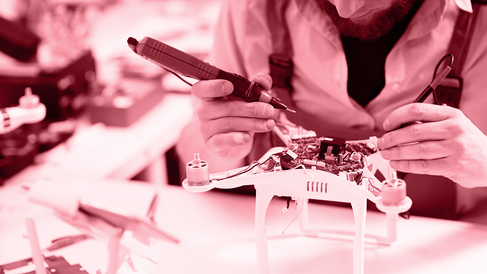

Nuesta Mision
Unir al mundo del voluntariado, facilitar el intercambio de conocimientos, fomentar el desarrollo y tecnológias en robótica y automatización.
Nuestro Objetivo Principal
Fomentar el desarrollo, facilitar el intercambio de conocimientos científicos, tecnológicos en robótica e automatización, independiente del nivel de conocimiento que se tenga de base, para que poder crear con libertad aplicaciones tecnológicas para solución de problemas de la sociedad.
